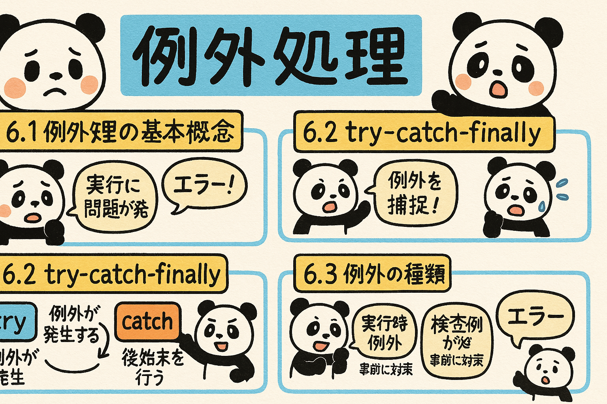

この章では、Javaにおける例外処理の基本から応用までを学習します。効果的な例外処理を行うことで、より堅牢なプログラムを作成できるようになります。
Javaプログラミングにおいて、例外処理は重要な概念です。プログラムの実行中に発生する予期しない事態や異常状態に対処する方法を学ぶことで、より堅牢で安全なプログラムを作成できます。
例外（Exception）とは、プログラムの実行中に発生する異常な状態や予期しないエラーを表すオブジェクトです。例外処理を行うことで、これらの問題が発生した際にプログラムが突然終了することを防ぎ、適切に対応することができます。
予期しないエラーが発生してもプログラムが突然終了せず、制御された方法で問題に対処できます。
例外のスタックトレースにより、問題の原因と発生場所を特定しやすくなります。
異なる種類のエラーに対して、適切な処理を行うことができます。
通常処理とエラー処理を分離することで、コードの可読性と保守性が向上します。
Javaでは、例外処理は主に以下の3つのステップで行われます：
図6.2: 例外処理の基本的な流れ
Javaにおける例外処理は、try、catch、finallyの3つのブロックを使用して行います。これらのブロックを適切に組み合わせることで、エラーが発生した場合でも制御された方法でプログラムを継続できます。
try {
// 例外が発生する可能性のあるコード
} catch (例外クラス名 変数名) {
// 例外が発生した場合の処理
}
以下は、配列の範囲外アクセスの例外をキャッチする簡単な例です：
public class TryCatchExample {
public static void main(String[] args) {
int[] numbers = {1, 2, 3};
try {
// 配列の範囲外にアクセスしようとする
System.out.println("配列の4番目の要素: " + numbers[3]);
System.out.println("この行は実行されません");
} catch (ArrayIndexOutOfBoundsException e) {
System.out.println("例外をキャッチしました: " + e.getMessage());
System.out.println("配列の範囲外にアクセスしようとしました");
}
System.out.println("プログラムは正常に続行します");
}
}
複数の種類の例外を処理したい場合は、複数のcatchブロックを使用できます。
public class MultipleCatchExample {
public static void main(String[] args) {
try {
int[] numbers = {1, 2, 3};
int result = numbers[1] / 0; // ArithmeticException発生
System.out.println(numbers[5]); // 実行されない
} catch (ArithmeticException e) {
System.out.println("算術例外が発生しました: " + e.getMessage());
} catch (ArrayIndexOutOfBoundsException e) {
System.out.println("配列の範囲外例外が発生しました: " + e.getMessage());
} catch (Exception e) {
System.out.println("その他の例外が発生しました: " + e.getMessage());
}
System.out.println("処理を継続します");
}
}
複数のcatchブロックを使用する場合は、より具体的な例外クラスを先に記述し、より一般的な例外クラスを後に記述する必要があります。例えば、ArrayIndexOutOfBoundsExceptionはExceptionのサブクラスなので、ArrayIndexOutOfBoundsExceptionのキャッチブロックをExceptionのキャッチブロックよりも先に配置する必要があります。
finallyブロックは、例外が発生しても発生しなくても必ず実行されるコードブロックです。リソースの解放など、確実に実行したい処理をここに記述します。
public class FinallyExample {
public static void main(String[] args) {
try {
System.out.println("tryブロックを実行中");
int result = 10 / 0; // 例外を発生させる
System.out.println("この行は実行されません");
} catch (ArithmeticException e) {
System.out.println("catchブロック: " + e.getMessage());
} finally {
System.out.println("finallyブロック: 必ず実行されます");
}
System.out.println("プログラムの続行");
}
}
finallyブロック内でreturn文を使用すると、try/catchブロック内のreturn文よりも優先されます。これにより予期しない動作が発生する可能性があるため、finallyブロック内でのreturnの使用は避けるべきです。
Java 7以降では、リソースを自動的に閉じるためのtry-with-resources構文が導入されました。これにより、finallyブロック内でリソースを明示的に閉じる必要がなくなりました。
import java.io.BufferedReader;
import java.io.FileReader;
import java.io.IOException;
public class TryWithResourcesExample {
public static void main(String[] args) {
// try-with-resourcesを使用したファイル読み込み
try (BufferedReader reader = new BufferedReader(new FileReader("sample.txt"))) {
String line = reader.readLine();
System.out.println("ファイルの内容: " + line);
// readerは自動的に閉じられる
} catch (IOException e) {
System.out.println("ファイル操作例外: " + e.getMessage());
}
}
}
以下の要件を満たすプログラムを作成してください：
Javaでは、例外は大きく分けて「検査例外（Checked Exception）」と「非検査例外（Unchecked Exception）」の2種類に分類されます。これらの違いを理解することは、適切な例外処理を行う上で重要です。
図6.3: 検査例外と非検査例外
検査例外は、コンパイル時に処理が強制される例外です。つまり、メソッドが検査例外をスローする可能性がある場合、そのメソッドを呼び出すコードは、例外をtry-catchで捕捉するか、さらに上位のメソッドに例外を伝播させる（throws宣言する）必要があります。
検査例外の主な例：
検査例外の例：
import java.io.FileReader;
import java.io.IOException;
public class CheckedExceptionExample {
// throwsでIOExceptionを宣言
public static void readFile(String fileName) throws IOException {
FileReader fileReader = new FileReader(fileName);
// ファイル処理...
fileReader.close();
}
public static void main(String[] args) {
try {
// 検査例外をスローする可能性があるメソッドの呼び出し
readFile("sample.txt");
} catch (IOException e) {
System.out.println("ファイル読み込みエラー: " + e.getMessage());
}
// 以下のようにtry-catchせずに呼び出すとコンパイルエラーになる
// readFile("sample.txt"); // エラー: Unhandled exception: java.io.IOException
}
}
非検査例外は、RuntimeExceptionクラスとそのサブクラスの例外です。これらの例外は、コンパイル時にチェックされず、処理が強制されません。プログラムの誤りによって発生することが多いため、通常はコードの修正によって防ぐべきものです。
非検査例外の主な例：
非検査例外の例：
public class UncheckedExceptionExample {
// この例外はthrows宣言が不要（任意）
public static int divide(int a, int b) {
return a / b; // bが0の場合はArithmeticExceptionが発生
}
public static void main(String[] args) {
// try-catchブロックは任意
try {
int result = divide(10, 0);
System.out.println("結果: " + result); // この行は実行されない
} catch (ArithmeticException e) {
System.out.println("計算エラー: " + e.getMessage());
}
// 例外処理せずに呼び出すこともできる（ただし、例外が発生するとプログラムは終了する）
// int result = divide(10, 0); // 実行時エラー: Exception in thread "main" java.lang.ArithmeticException: / by zero
}
}
例外クラスを設計する際は、以下の指針を参考にすると良いでしょう：
Errorクラスとそのサブクラスは、深刻なエラーを表し、通常はアプリケーションで回復することが期待されません。例えば、OutOfMemoryErrorやStackOverflowErrorなどがあります。これらは非検査例外と同様に扱われますが、通常はキャッチするべきではありません。
以下の例外クラスが検査例外か非検査例外かを分類してください：
Javaでは、例外は発生した場所から呼び出し元のメソッドへと「伝播（propagation）」していきます。この仕組みを理解し、適切な場所で例外をキャッチしたり、上位のメソッドに伝えたりすることが重要です。
throwキーワードを使用して、明示的に例外をスローすることができます。
public class ThrowExample {
public static void checkAge(int age) {
if (age < 0) {
throw new IllegalArgumentException("年齢は0以上である必要があります");
}
if (age < 18) {
throw new ArithmeticException("18歳未満は参加できません");
}
System.out.println("参加が許可されました");
}
public static void main(String[] args) {
try {
checkAge(-5); // IllegalArgumentExceptionがスローされる
} catch (IllegalArgumentException e) {
System.out.println("不正な引数: " + e.getMessage());
} catch (ArithmeticException e) {
System.out.println("計算エラー: " + e.getMessage());
}
try {
checkAge(16); // ArithmeticExceptionがスローされる
} catch (IllegalArgumentException e) {
System.out.println("不正な引数: " + e.getMessage());
} catch (ArithmeticException e) {
System.out.println("計算エラー: " + e.getMessage());
}
try {
checkAge(20); // 例外は発生しない
} catch (Exception e) {
System.out.println("例外が発生しました: " + e.getMessage());
}
}
}
例外が発生すると、その例外を処理するcatchブロックが見つかるまで、メソッド呼び出しスタックをさかのぼって伝播します。適切なcatchブロックが見つからない場合、最終的にJVMによってプログラムが終了します。
図6.4: 例外の伝播
以下の例では、3つのメソッドを通じた例外の伝播を示しています：
public class ExceptionPropagationExample {
public static void main(String[] args) {
try {
System.out.println("main()メソッドの開始");
methodA();
System.out.println("main()メソッドの終了"); // この行は実行されない
} catch (Exception e) {
System.out.println("main()で例外をキャッチ: " + e.getMessage());
e.printStackTrace();
}
System.out.println("プログラムの続行");
}
public static void methodA() {
System.out.println("methodA()の開始");
// 例外処理をしていないので、発生した例外は呼び出し元（main）に伝播する
methodB();
System.out.println("methodA()の終了"); // この行は実行されない
}
public static void methodB() {
System.out.println("methodB()の開始");
// 例外をスローする
throw new RuntimeException("methodB()で例外が発生しました");
// この行以降は実行されない
}
}
メソッドが処理しない検査例外を上位のメソッドに伝えるには、throwsキーワードを使用します。
import java.io.FileReader;
import java.io.IOException;
public class ThrowsExample {
// IOException（検査例外）をメソッドシグネチャで宣言
public static void readFile(String filename) throws IOException {
FileReader reader = null;
try {
reader = new FileReader(filename);
// ファイル読み込み処理...
} finally {
if (reader != null) {
reader.close();
}
}
}
public static void main(String[] args) {
try {
readFile("nonexistent.txt");
} catch (IOException e) {
System.out.println("ファイル読み込みエラー: " + e.getMessage());
}
}
}
非検査例外（RuntimeExceptionとそのサブクラス）は、メソッドシグネチャでthrows宣言しなくても伝播します。ただし、ドキュメンテーションの目的や、呼び出し側に例外の可能性を明示する目的で宣言することもあります。
catch ブロック内で例外を捕捉した後、何も処理をせずに無視することは悪い習慣です。最低でも例外情報をログに記録するなど、適切な処理を行うべきです。
try {
// 何らかの処理
} catch (Exception e) {
// 何もしない - これは避けるべき
}
以下の要件を満たすプログラムを作成してください：
Javaでは、標準の例外クラスだけでなく、アプリケーション固有の例外を表現するための独自の例外クラスを作成することができます。これにより、より明確で具体的なエラー処理が可能になります。
独自の例外クラスを作成するには、通常Exception（検査例外）またはRuntimeException（非検査例外）クラスを継承します。
// 検査例外の例（Exceptionを継承）
public class InsufficientFundsException extends Exception {
private double amount;
public InsufficientFundsException(String message, double amount) {
super(message);
this.amount = amount;
}
public double getAmount() {
return amount;
}
}
// 非検査例外の例（RuntimeExceptionを継承）
public class InvalidAccountNumberException extends RuntimeException {
private String accountNumber;
public InvalidAccountNumberException(String message, String accountNumber) {
super(message);
this.accountNumber = accountNumber;
}
public String getAccountNumber() {
return accountNumber;
}
}
以下は銀行口座のシミュレーションで、自作例外クラスを使用する例です：
public class BankAccount {
private String accountNumber;
private double balance;
public BankAccount(String accountNumber, double initialBalance) {
if (accountNumber == null || accountNumber.length() < 5) {
throw new InvalidAccountNumberException("無効な口座番号です", accountNumber);
}
this.accountNumber = accountNumber;
this.balance = initialBalance;
}
// 預金メソッド
public void deposit(double amount) {
if (amount <= 0) {
throw new IllegalArgumentException("預金額は正の値である必要があります");
}
balance += amount;
}
// 引き出しメソッド（検査例外をスロー）
public void withdraw(double amount) throws InsufficientFundsException {
if (amount <= 0) {
throw new IllegalArgumentException("引き出し額は正の値である必要があります");
}
if (amount > balance) {
throw new InsufficientFundsException(
"残高不足です。現在の残高: " + balance + ", 引き出し額: " + amount,
amount - balance
);
}
balance -= amount;
}
public double getBalance() {
return balance;
}
public String getAccountNumber() {
return accountNumber;
}
}
// メインクラス
public class BankDemo {
public static void main(String[] args) {
try {
// 口座の作成
BankAccount account = new BankAccount("12345", 1000.0);
System.out.println("口座番号: " + account.getAccountNumber());
System.out.println("初期残高: " + account.getBalance());
// 預金
account.deposit(500.0);
System.out.println("預金後の残高: " + account.getBalance());
// 引き出し（成功）
account.withdraw(300.0);
System.out.println("引き出し後の残高: " + account.getBalance());
// 引き出し（失敗 - 残高不足）
account.withdraw(1500.0);
System.out.println("この行は実行されません");
} catch (InsufficientFundsException e) {
System.out.println("例外: " + e.getMessage());
System.out.println("不足額: " + e.getAmount());
} catch (InvalidAccountNumberException e) {
System.out.println("例外: " + e.getMessage());
System.out.println("無効な口座番号: " + e.getAccountNumber());
}
}
}
より完全な例外クラスの例：
public class DatabaseConnectionException extends Exception {
private static final long serialVersionUID = 1L; // シリアライズのためのバージョンID
private String serverAddress;
private int port;
private int errorCode;
// 基本コンストラクタ
public DatabaseConnectionException(String message) {
super(message);
}
// メッセージと原因を受け取るコンストラクタ
public DatabaseConnectionException(String message, Throwable cause) {
super(message, cause);
}
// 追加情報を受け取るコンストラクタ
public DatabaseConnectionException(String message, String serverAddress, int port, int errorCode) {
super(message);
this.serverAddress = serverAddress;
this.port = port;
this.errorCode = errorCode;
}
// 追加情報と原因を受け取るコンストラクタ
public DatabaseConnectionException(String message, Throwable cause,
String serverAddress, int port, int errorCode) {
super(message, cause);
this.serverAddress = serverAddress;
this.port = port;
this.errorCode = errorCode;
}
// アクセサメソッド
public String getServerAddress() {
return serverAddress;
}
public int getPort() {
return port;
}
public int getErrorCode() {
return errorCode;
}
}
学生の成績管理システムを想定して、以下の自作例外クラスを作成してください：
そして、これらの例外を適切に使用するStudentRegistryクラスを実装してください。
効果的な例外処理は、堅牢で保守性の高いプログラムを書くための重要な要素です。ここでは、Javaでの例外処理に関するベストプラクティスをいくつか紹介します。
Exceptionのような広範な例外クラスをキャッチするのではなく、できるだけ具体的な例外クラスをキャッチしましょう。
✓ 良い例: 具体的な例外のキャッチ
try {
// コード
} catch (FileNotFoundException e) {
// 具体的な処理
} catch (IOException e) {
// より一般的な処理
}
✗ 悪い例: 広すぎる例外のキャッチ
try {
// コード
} catch (Exception e) {
// すべての例外を同じように処理
}
空のcatchブロックは避け、最低でもログ出力などの処理を行いましょう。
✓ 良い例: 例外情報を記録
try {
// コード
} catch (IOException e) {
logger.error("ファイル処理エラー", e);
// エラー処理
}
✗ 悪い例: 例外を無視
try {
// コード
} catch (IOException e) {
// 何もしない
}
Java 7以降ではtry-with-resourcesを使用し、それ以前ではfinallyブロックでリソースを確実に解放しましょう。
✓ 良い例: try-with-resources
try (FileReader reader = new FileReader(file)) {
// ファイル処理
} catch (IOException e) {
// エラー処理
}
✓ 良い例: finallyでの解放
FileReader reader = null;
try {
reader = new FileReader(file);
// ファイル処理
} catch (IOException e) {
// エラー処理
} finally {
if (reader != null) {
try {
reader.close();
} catch (IOException e) {
// クローズ時のエラー処理
}
}
}
低レベルの例外を捕捉して、より具体的なコンテキスト情報を追加してから再スローすることで、デバッグを容易にします。
try {
// データベース処理
} catch (SQLException e) {
throw new DatabaseException(
"ユーザーID " + userId + " の情報取得に失敗", e);
}
予期できる条件は、例外ではなく通常の条件チェックで処理しましょう。例外処理は異常系の処理に使用するべきです。
✓ 良い例: 条件チェック
if (value != null) {
process(value);
} else {
handleNullValue();
}
✗ 悪い例: 例外を制御フローに使用
try {
process(value);
} catch (NullPointerException e) {
handleNullValue();
}
メソッドがスローする可能性のある例外を JavaDoc でドキュメント化し、その例外が発生する条件と対処方法を説明しましょう。
/**
* ファイルからデータを読み込みます。
* @param filename 読み込むファイルのパス
* @return 読み込んだデータ
* @throws FileNotFoundException ファイルが存在しない場合
* @throws IOException ファイル読み込み中にエラーが発生した場合
*/
public Data loadData(String filename)
throws FileNotFoundException, IOException {
// 実装
}
大規模なアプリケーションでは、一貫した例外処理戦略を持つことが重要です。以下は、多くのJavaアプリケーションで採用されている一般的な例外処理パターンです：
図6.5: 多層アプリケーションでの例外処理戦略
以下の問題に答えて、第6章の内容の理解度を確認しましょう。
問題1: 次のうち、検査例外（Checked Exception）ではないものはどれですか？
問題2: 検査例外を処理する方法として正しいものは？
問題3: 次のコードの出力として正しいものはどれですか？
public class Test {
public static void main(String[] args) {
try {
System.out.print("A");
int num = 10 / 0;
System.out.print("B");
} catch (ArithmeticException e) {
System.out.print("C");
} finally {
System.out.print("D");
}
System.out.print("E");
}
}
問題4: 自作例外クラスを作成する際の正しい方法は？
問題5: 次のコードでコンパイルエラーが発生する理由は？
public class Test {
public static void main(String[] args) {
readFile("test.txt");
}
public static void readFile(String filename) throws IOException {
FileReader reader = new FileReader(filename);
// ファイル処理...
reader.close();
}
}